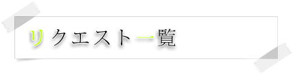

は、作成が完了したものです。
- アエラ さま
- 黒背景で、フレームで、小説展示ができるテンプレート
- nuko さま
- テンプレ99番のフレームバージョン。色は青、水色に変えてメニューは左側のテンプレート
- ETERNAL BLUE さま
- 青空系統のインフレームかフレームの品のテンプレート
- 六錆綸 さま
- 絵を展示しやすくて、綺麗系なテンプレート
- ピヨ川 さま
- アースカラー系のシンプルなテンプレート
- せいこ さま
- ノーフレームで白ベース。センター寄りで見やすい感じのテンプレート
- かな さま
- 二分割フレーム。茶色などの落ち着いた色。シンプルなテンプレート
- 齊藤祭 さま
- 色は全体的にピンク色でフレームかアイフレーム系のデザイン、可愛いテンプレート
- レイナ さま
- 食べ物（お菓子など）の写真を使ったテンプレート
- 氷上 さま
- 左右比が2:8くらいがいいです。128や129のような四角いアイコンを左側に配置してあるテンプレート
- 日下 さま
- 和風の写真を使ったフレームのテンプレート
- 狐 さま
- サイト名が有って、その下のラインにメニューみたいなフレームの白黒ツートンカラーのテンプレート
- いわし さま
- 白黒で、画像も使わず、全体的にあまりごちゃごちゃせずに、最低限の機能だけ。とにかくシンプルなテンプレート
- 道行 さま
- インフレがフレームで、全体的にレトロな雰囲気、小説サイト向けのテンプレート
- はな さま
- No.2のプレートを女の子らしくするテンプレート
- 銀 さま
- 背景画像を星空など星が入っている写真素材。画像はメニューでもメインページでもどちらでも構いません。リンクの色は青系、水色などのテンプレート
- kiki さま
- イラストを差し替えたりおいたりしても違和感がなくて、メニューがたくさんあるテンプレート
- 袖 さま
- ノーフレームで上の画像の取替えが簡単で、淡い茶色メインのテンプレート
- 張 純 さま
- ２００８年７月現在のデザインのテンプレート
- 李 爽 さま
- 絵の下にMenu,下に更新履歴。イラストなどが飾れるテンプレート
- やなせ櫂 さま
- 緑基調の左上画像固定、できるだけ画像を邪魔しないようなテンプレート
- 玲 さま
- 同盟用のテンプレート。メニューは２つ程度。フレームありで配色は,黒、灰、白のテンプレート
- 螢 さま
- フレーム, イラストが左に1枚ほど展示出来、更新履歴が下につく。そしてメニューを左に、左の背景は空の明るい写真のテンプレート
- りぃ さま
- NO.44の水色verのテンプレート
- ひじり さま
- 7月現在のＴＯＰページのようなので、ノーフレームで空系。今のＴＯＰページの背景ボーダーは無いテンプレート